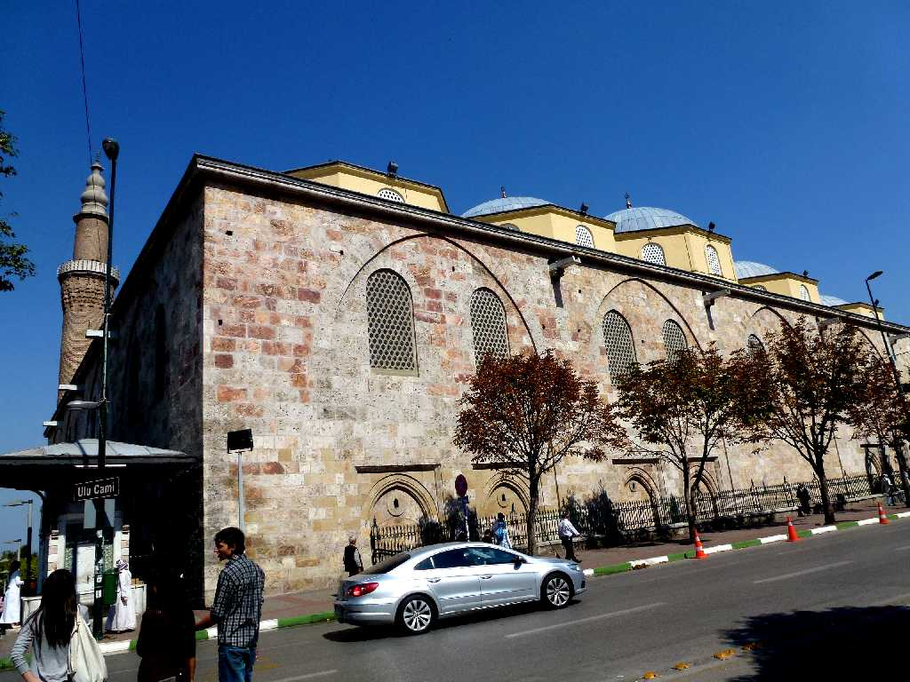
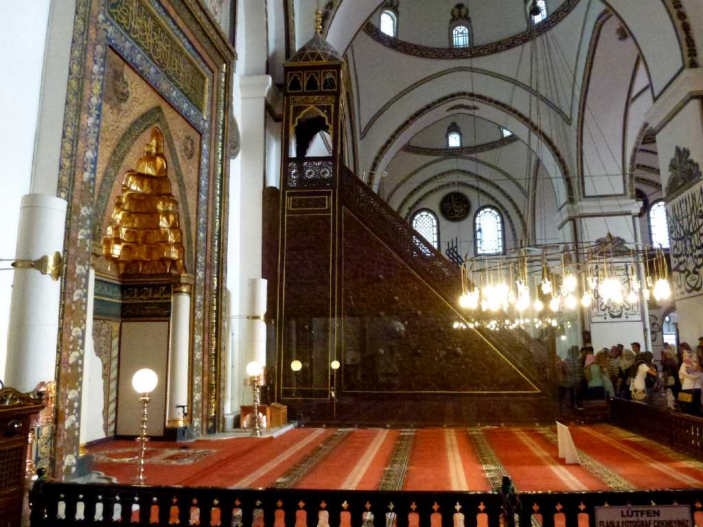
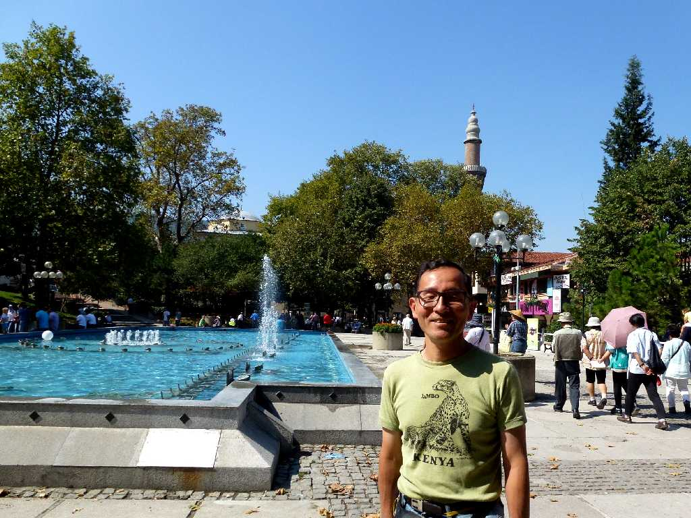
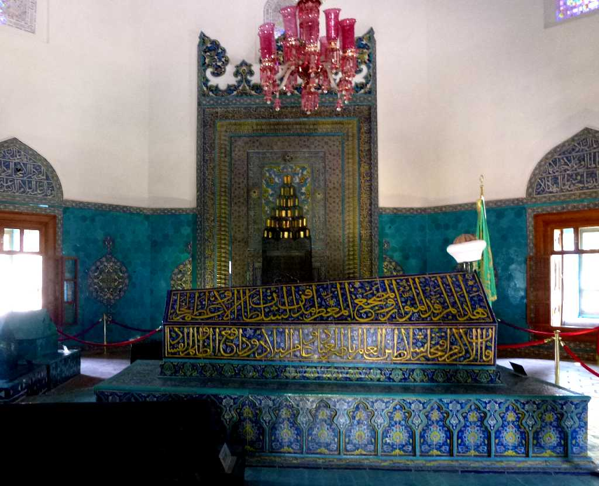

Ule Camii Bursa
１４世紀末期に創られたオスマン帝国初期の２０のドームを持つ大モスクでミヒラーブと一枚大理石に太陽系を表わす彫刻がある説教壇ミンバルがとても美しい

Minbar Mihrab Ulu Camii

September 25 2011 Ule Camii Bursa

Sultan Mehmet I Yeşil Türbe Bursa
シルクロードの交易都市として栄え１４世紀にはオスマン帝国の首都が置かれ帝国初期のスルタン廟が多く残っている イェシルテュルベは緑の霊廟を意味しタイルが美しいスルタンのメフメットⅠ世の墓